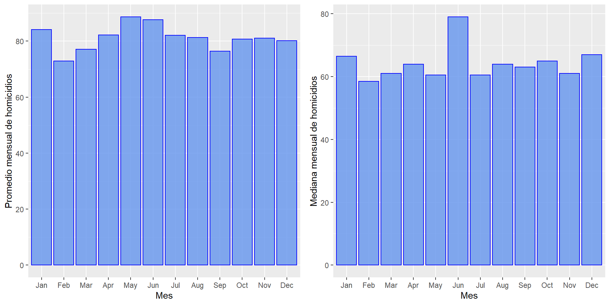
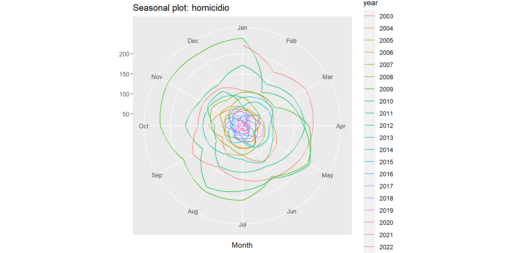
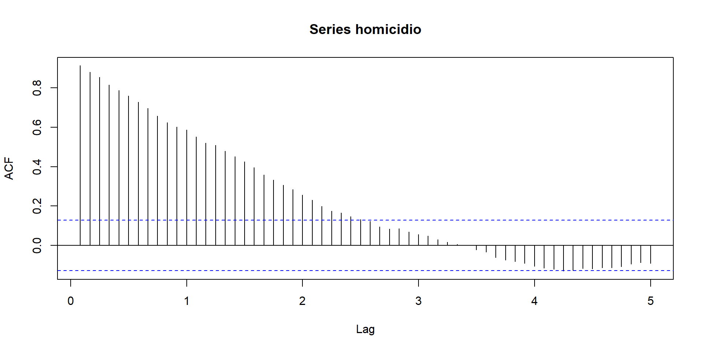
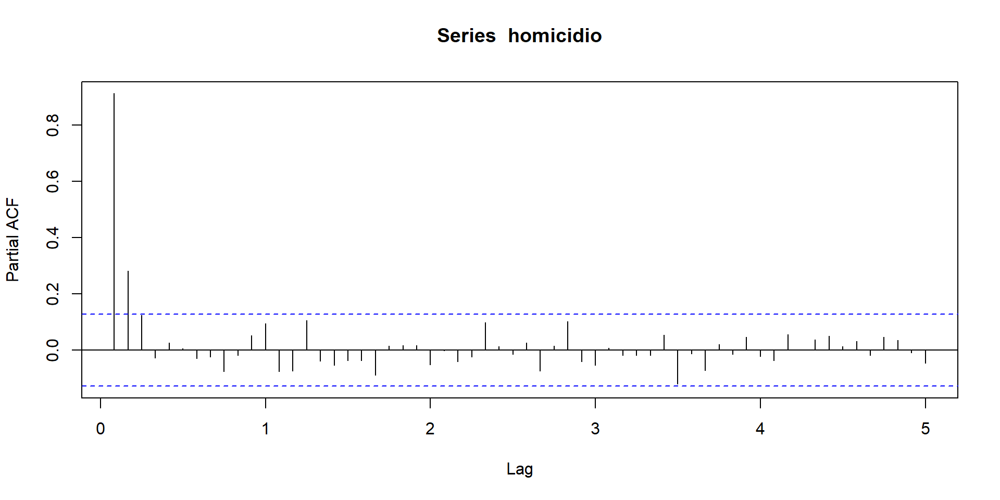
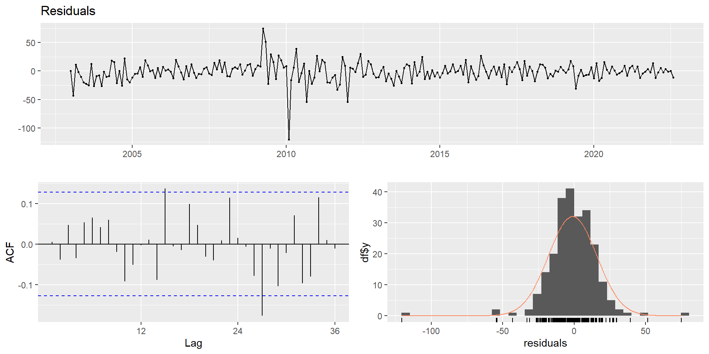
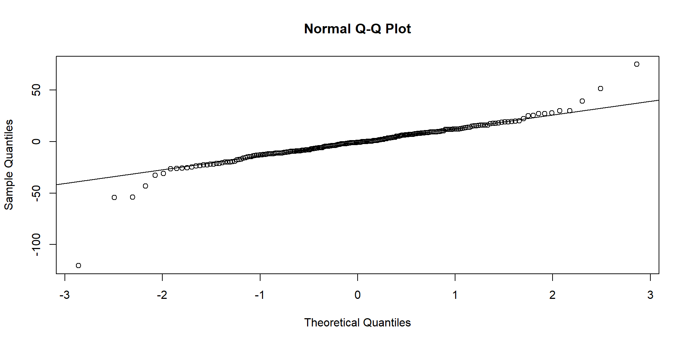
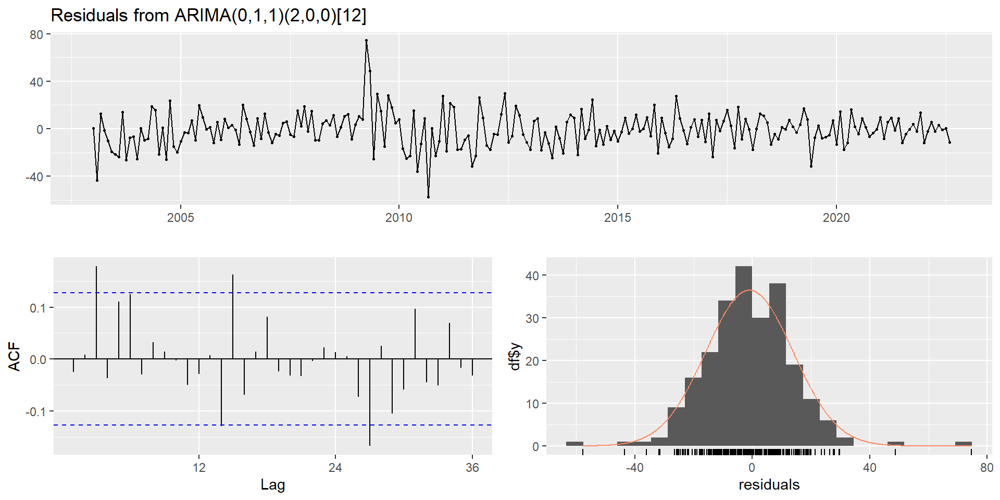
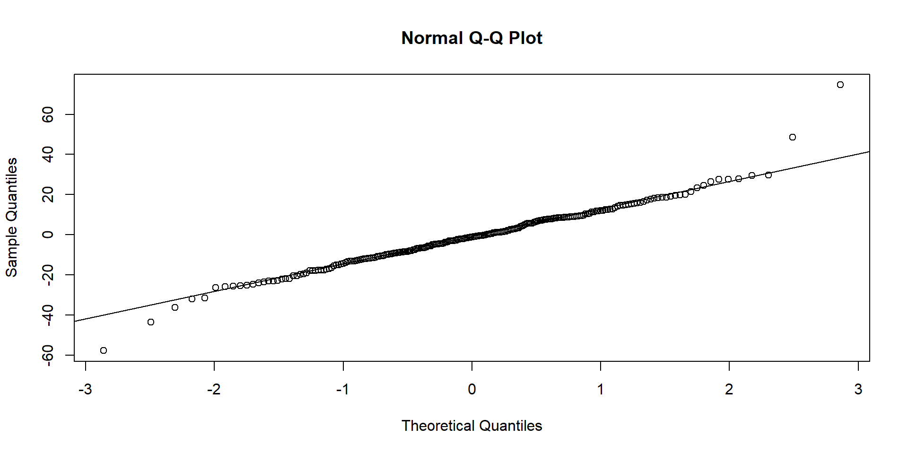

Marco teórico
La base de datos homicidio.csv encontrada en el portal MEData contiene información acerca de los homicidios registrados por la mesa de revisión y validación de casos de homicidio en la ciudad de Medellín. Dicha base de datos en crudo contiene 19169 observaciones de 36 variables.
| fecha_hecho | cantidad |
|---|---|
| 2019-04-23T07:30:00.000-05:00 | 1 |
| 2019-05-11T19:51:00.000-05:00 | 1 |
| 2019-05-11T21:36:00.000-05:00 | 1 |
| 2019-05-11T22:03:00.000-05:00 | 1 |
| 2019-05-12T17:40:00.000-05:00 | 1 |
El interés se centra en estudiar el comportamiento de este suceso a lo largo del tiempo para determinar si existen épocas del año donde el número de homicidios aumente o muestre patrones.
Lectura y limpieza de la base de datos:
- Adecuación de la fecha:
homicidios$fecha_hecho <- substr(homicidios$fecha_hecho, 0, 7)
- Conteo por mes de casos:
resumen_hom <- homicidios %>% group_by(fecha_hecho) %>% summarise(casos=sum(cantidad))
- Generación de fechas:
resumen_hom$fecha <- seq(as.Date("2003-01-01"), by="month", len=236)Serie de tiempo: Casos de homicidio en Medellín:

En la serie se observa una decaimiento en los primeros años, correspondientes a los años 2003-2004. Para inicios de 2009 el número de homicidios se dispara nuevamente hasta alcanzar un pico en enero de 2010 con un total de 239 homicidios registrados. De ahí en adelante empieza su descenso y parece estabilizarse en los últimos años. Además, con el gráfico de barras de las medianas por mes (dado que el promedio es más sensible a outliers) se observa que en el mes de junio en mediana se presentan mayor número de homicidios.
Por otro lado, con la gráfica de la serie de tiempo por si sola, dada la escala de los registros es díficil determinar si existe estacionalidad, por lo que se presentan los siguientes gráficos para el diagnóstico de esta:

En los últimos gráficos se observa que la serie no presenta estacionalidad, es decir, los meses no están relacionados con el número de homicidios. Sin embargo, dada la escala y la presencia de outliers, no es fácil de manera gráfica detectar estacionalidad, por lo que previamente se ha convertido la serie en un objeto ts con frecuencia 12 y se aplica la función auto.arima.


Modelo a utilizar y alternativas
mod <- auto.arima(homicidio, stepwise = FALSE, approximation = FALSE)
summary(mod)Series: homicidio
ARIMA(0,1,1)(1,0,0)[12]
Coefficients:
ma1 sar1
-0.3954 0.1719
s.e. 0.0596 0.0655
sigma^2 = 290: log likelihood = -998.93
AIC=2003.86 AICc=2003.97 BIC=2014.24
Training set error measures:
ME RMSE MAE MPE MAPE MASE
Training set -1.106916 16.92146 11.53901 -4.068618 16.46218 0.4204877
ACF1
Training set 0.004800322
La función auto.arima arrojó como resultado un modelo \(SARIMA(0,1,1) \times (1,0,0)_{12}\).
Validación de supuestos:
Se procede a verificar el cumplimiento de los supuestos de este modelo:

Supuesto de normalidad:

Pruebas analíticas
- Prueba de Ljung-Box:
Box-Ljung test
data: mod$residuals
X-squared = 17.255, df = 20, p-value = 0.6363
- Prueba de Jarque Bera:
Jarque Bera Test
data: mod$residuals
X-squared = 1397.1, df = 2, p-value < 2.2e-16
- Prueba de Shapiro-Wilk:
Shapiro-Wilk normality test
data: mod$residuals
W = 0.88459, p-value = 1.985e-12Con un nivel de significancia del 5 %, dados los resultados anteriores, se concluye que los residuales del modelo no están autocorrelacionados, sin embargo estos no siguen una distribución normal.
Se procede ahora a modelar los valores outliers del modelo para luego proceder a hacer predicciones y ver si el comportamiento del año 2010 tiene un efecto sobre estas dado que se realizan más de 10 años después.
delta <- seq(0.1, 0.90, 0.05)
bic_1 <- vector()
ljungbox1 <- vector()
i = 0
for(d in delta){
i = i+1
modelo_outl <- tso(homicidio, delta=d)
bic_1[i] <- modelo_outl$fit$bic
ljungbox1[i] <- checkresiduals(modelo_outl$fit,
plot = FALSE)$p.value
}which.min(bic_1)[1] 13delta[13][1] 0.7ljungbox1[13][1] 0.1014876
mod_outliers <- tso(homicidio, delta = 0.7)
mod_outliersSeries: homicidio
Regression with ARIMA(0,1,1)(2,0,0)[12] errors
Coefficients:
ma1 sar1 sar2 LS76 TC86 LS93 TC105
-0.5060 0.2182 -0.0091 81.9017 -111.1353 -60.0279 -48.5372
s.e. 0.0504 0.0720 0.0723 10.7255 11.3397 10.9156 11.5927
TC109
-55.1953
s.e. 11.2911
sigma^2 = 164: log likelihood = -929.04
AIC=1876.08 AICc=1876.88 BIC=1907.21
Outliers:
type ind time coefhat tstat
1 LS 76 2009:04 81.90 7.636
2 TC 86 2010:02 -111.14 -9.801
3 LS 93 2010:09 -60.03 -5.499
4 TC 105 2011:09 -48.54 -4.187
5 TC 109 2012:01 -55.20 -4.888
Al modelar los outliers el modelo arrojado por la función tso es un \(SARIMA(0,1,1) \times (2,0,0)_{12}\)
Se modelan los outliers arrojados por la función tso.
modelo2 <- arimax(homicidio, order = c(0,1,1),
seasonal = list(order = c(2,0,0)),
xtransf = data.frame(abril2009 = 1*c(rep(0,75),rep(1,161)),
febrero2010 =1*(seq_along(homicidio) == 86),
septiembre2010 = 1*c(rep(0,92),rep(1,144)),
septiembre2011 = 1*(seq_along(homicidio) == 105),
enero2012 = 1*(seq_along(homicidio) == 109)),
transfer=list(c(0, 0), c(1, 0), c(0,0), c(1, 0), c(1, 0)))coeftest(modelo2)
z test of coefficients:
Estimate Std. Error z value Pr(>|z|)
ma1 -7.8949e-02 9.2146e-02 -0.8568 0.3916
sar1 5.5277e-02 7.3422e-02 0.7529 0.4515
sar2 1.0579e-03 7.1470e-02 0.0148 0.9882
abril2009-MA0 1.2696e+00 2.0927e+01 0.0607 0.9516
febrero2010-AR1 5.2249e-01 5.2660e-03 99.2199 < 2.2e-16 ***
febrero2010-MA0 -1.4142e+02 1.5042e+01 -9.4015 < 2.2e-16 ***
septiembre2010-MA0 -7.9048e-01 1.8003e+01 -0.0439 0.9650
septiembre2011-AR1 2.1436e-01 6.6411e-01 0.3228 0.7469
septiembre2011-MA0 -3.1985e+01 3.2766e+01 -0.9761 0.3290
enero2012-AR1 3.0030e-01 2.5501e-01 1.1776 0.2390
enero2012-MA0 -6.7630e+01 1.6749e+01 -4.0379 5.392e-05 ***
---
Signif. codes: 0 '***' 0.001 '**' 0.01 '*' 0.05 '.' 0.1 ' ' 1Se procede entonces a ajustar el modelo con los parámetros significativos.
modelo_3 <- arimax(homicidio, order = c(0,1,1),
seasonal = list(order = c(2,0,0)),
xtransf = data.frame(febrero2010 =1*(seq_along(homicidio) == 86),
enero2012 = 1*(seq_along(homicidio) == 109)),
transfer=list(c(1, 0), c(0, 0)))
coeftest(modelo_3)
z test of coefficients:
Estimate Std. Error z value Pr(>|z|)
ma1 -3.5844e-01 5.4228e-02 -6.6099 3.846e-11 ***
sar1 1.7514e-01 6.8421e-02 2.5598 0.0104734 *
sar2 1.8729e-02 6.9022e-02 0.2713 0.7861219
febrero2010-AR1 5.1358e-01 7.1935e-03 71.3953 < 2.2e-16 ***
febrero2010-MA0 -1.0404e+02 1.3747e+01 -7.5681 3.787e-14 ***
enero2012-MA0 -4.0749e+01 1.2224e+01 -3.3335 0.0008577 ***
---
Signif. codes: 0 '***' 0.001 '**' 0.01 '*' 0.05 '.' 0.1 ' ' 1Validación de supuestos.

Supuesto de normalidad:

Pruebas analíticas
- Prueba de Ljung-Box:
Box.test(modelo_3$residuals, lag = 20, type = "Ljung")
Box-Ljung test
data: modelo_3$residuals
X-squared = 30.726, df = 20, p-value = 0.05891
- Prueba de Jarque Bera:
jarque.bera.test(modelo_3$residuals)
Jarque Bera Test
data: modelo_3$residuals
X-squared = 100.85, df = 2, p-value < 2.2e-16
- Prueba de Shapiro-Wilk:
shapiro.test(modelo_3$residuals)
Shapiro-Wilk normality test
data: modelo_3$residuals
W = 0.96851, p-value = 4.338e-05Con un nivel de significancia del 5 %, dados los resultados anteriores, se concluye que los residuales del modelo no están autocorrelacionados, sin embargo estos no siguen una distribución normal.
Backtesting
Se procede a partir la base de datos en 2: la primera parte hasta agosto de 2021 para entrenamiento y el último año para testeo:
train <- window(homicidio, start = c(2003, 1), end = c(2021,8))
test <- window(homicidio, start = c(2021,9))Ajustado con auto.arima con los datos en la escala original:
modelo_train1 <- auto.arima(train, stepwise = F, approximation = F)
summary(modelo_train1)Series: train
ARIMA(0,1,1)(1,0,0)[12]
Coefficients:
ma1 sar1
-0.3927 0.1725
s.e. 0.0614 0.0671
sigma^2 = 303.4: log likelihood = -952.92
AIC=1911.84 AICc=1911.95 BIC=1922.06
Training set error measures:
ME RMSE MAE MPE MAPE MASE
Training set -1.138478 17.30182 11.90056 -4.050572 16.52095 0.4152268
ACF1
Training set 0.00514172Modelando los outliers y con los datos en la escala original:
delta <- seq(0.1, 0.90, 0.05)
aic_1 <- vector()
ljungbox1 <- vector()
i = 0
for(d in delta){
i = i+1
modelo_outl <- tso(train, delta=d)
aic_1[i] <- modelo_outl$fit$aic
ljungbox1[i] <- checkresiduals(modelo_outl$fit,
plot = FALSE)$p.value
}which.min(aic_1)[1] 12ljungbox1[12][1] 0.315611delta[12][1] 0.65modelo_aux <- tso(train, delta = 0.65)
modelo_auxSeries: train
Regression with ARIMA(2,1,0)(2,0,0)[12] errors
Coefficients:
ar1 ar2 sar1 sar2 LS76 TC86 LS93 TC105
-0.5713 -0.2504 0.1890 0.0242 79.7550 -115.3785 -52.0889 -45.6197
s.e. 0.0674 0.0675 0.0716 0.0760 10.6528 11.0136 10.8125 11.3661
TC109
-51.8522
s.e. 11.0971
sigma^2 = 168.3: log likelihood = -883.78
AIC=1787.57 AICc=1788.6 BIC=1821.64
Outliers:
type ind time coefhat tstat
1 LS 76 2009:04 79.75 7.487
2 TC 86 2010:02 -115.38 -10.476
3 LS 93 2010:09 -52.09 -4.817
4 TC 105 2011:09 -45.62 -4.014
5 TC 109 2012:01 -51.85 -4.673modelo_aux <- arimax(train, order = c(0,1,1),
seasonal = list(order = c(2,0,0)),
xtransf = data.frame(abril2009 = 1*c(rep(0,75),rep(1,149)),
febrero2010 =1*(seq_along(train) == 86),
septiembre2010 = 1*c(rep(0,92),rep(1,132)),
septiembre2011 = 1*(seq_along(train) == 105),
enero2012 = 1*(seq_along(train) == 109)),
transfer=list(c(0, 0), c(1, 0), c(0,0), c(1, 0), c(1, 0)))
coeftest(modelo_aux)
z test of coefficients:
Estimate Std. Error z value Pr(>|z|)
ma1 -7.8834e-02 9.4060e-02 -0.8381 0.4020
sar1 5.6374e-02 7.5233e-02 0.7493 0.4537
sar2 4.3374e-05 7.4061e-02 0.0006 0.9995
abril2009-MA0 1.3324e+00 2.1434e+01 0.0622 0.9504
febrero2010-AR1 5.3302e-01 5.6082e-03 95.0425 < 2.2e-16 ***
febrero2010-MA0 -1.4355e+02 1.5515e+01 -9.2521 < 2.2e-16 ***
septiembre2010-MA0 -8.5257e-01 1.8423e+01 -0.0463 0.9631
septiembre2011-AR1 2.1898e-01 6.5285e-01 0.3354 0.7373
septiembre2011-MA0 -3.2464e+01 3.2538e+01 -0.9977 0.3184
enero2012-AR1 3.0762e-01 2.5707e-01 1.1966 0.2314
enero2012-MA0 -6.8626e+01 1.7118e+01 -4.0089 6.099e-05 ***
---
Signif. codes: 0 '***' 0.001 '**' 0.01 '*' 0.05 '.' 0.1 ' ' 1# Valores outliers significafivos
xreg <- cbind(I1=stats::filter(1*(seq.int(length(train) + 12) == 86),
filter=0.51358,method = "rec",
sides = 1))
xreg2 <- data.frame(TC86 = xreg, TC109 = 1*(seq.int(length(train) + 12) == 109))
modelo_train2 <- arima(train, order = c(2,1,0), seasonal = list(order=c(2,0,0)),
xreg = xreg2[1:224, ])
coeftest(modelo_train2)
z test of coefficients:
Estimate Std. Error z value Pr(>|z|)
ar1 -0.403120 0.067080 -6.0095 1.861e-09 ***
ar2 -0.185963 0.069014 -2.6946 0.007048 **
sar1 0.125935 0.071142 1.7702 0.076693 .
sar2 0.035472 0.072045 0.4924 0.622467
TC86 -107.424180 13.935449 -7.7087 1.271e-14 ***
TC109 -36.404742 12.739533 -2.8576 0.004268 **
---
Signif. codes: 0 '***' 0.001 '**' 0.01 '*' 0.05 '.' 0.1 ' ' 1Aplicando la transformación logaritmo:
modelo_train_log <- auto.arima(log(train), stepwise = F, approximation = F)
summary(modelo_train_log)Series: log(train)
ARIMA(0,1,1)(1,0,0)[12]
Coefficients:
ma1 sar1
-0.5416 0.1556
s.e. 0.0531 0.0668
sigma^2 = 0.0417: log likelihood = 38.53
AIC=-71.06 AICc=-70.95 BIC=-60.84
Training set error measures:
ME RMSE MAE MPE MAPE MASE
Training set -0.01568913 0.2028299 0.1572253 -0.5496429 3.865519 0.4767019
ACF1
Training set -0.02816334Aplicando transformación logaritmo y modelando los outliers:
delta <- seq(0.1, 0.90, 0.05)
aic_1 <- vector()
ljungbox1 <- vector()
i = 0
for(d in delta){
i = i+1
modelo_outl <- tso(log(train), delta=d)
aic_1[i] <- modelo_outl$fit$aic
ljungbox1[i] <- checkresiduals(modelo_outl$fit,
plot = FALSE)$p.value
}which.min(aic_1)[1] 1ljungbox1[1][1] 0.9502755delta[1][1] 0.1modelo_train2_log <- tso(log(train), delta = 0.1)
modelo_train2_log Series:
ARIMA(0,1,1)(0,0,1)[12]
Coefficients:
ma1 sma1
-0.5411 0.1536
s.e. 0.0534 0.0670
sigma^2 = 0.04172: log likelihood = 38.46
AIC=-70.93 AICc=-70.82 BIC=-60.71
No outliers were detected.Bajo la transformación logaritmo, la función tso no detecta outliers, por lo que este modelo no será tenido en cuenta de aquí en adelante.
Predicciones para comparar modelos:
- Predicciones modelo 1:
npred <- 12
fore1 <- forecast(modelo_train1, h=npred)
- Predicciones modelo 2:
fore2 <- predict(modelo_train2, 12, newxreg = xreg2[225:236,])
- Predicciones modelo 3:
fore1_log <- forecast(modelo_train_log, h=npred)Medidas de error:
# Modelo 1:
accuracy(fore1$mean, test) ME RMSE MAE MPE MAPE ACF1 Theil's U
Test set 1.929462 5.454308 4.101654 3.577428 12.22427 -0.3554528 0.7842597# Modelo 2:
accuracy(fore2$pred, test) ME RMSE MAE MPE MAPE ACF1 Theil's U
Test set 2.260663 5.598288 4.388215 4.579615 13.01895 -0.306108 0.8010046# Modelo 3:
accuracy(exp(fore1_log$mean), test) ME RMSE MAE MPE MAPE ACF1 Theil's U
Test set 1.116842 5.226694 4.006872 1.008613 12.26614 -0.3402633 0.7417582Donde se obtiene que las medidas de errores son menores en el modelo 3, lo que indica que es el modelo más adecuado de los propuestos para modelar la serie de tiempo de homicidios en Medellín en la ventana de tiempo considerada.
Gráfico de los valores ajustados para el entrenamiento:
df_train <- data.frame(fecha=resumen_hom$fecha[1:length(train)],
real=
resumen_hom$casos[1:length(train)],
pred1 = modelo_train1$fitted,
pred2 = fitted(modelo_train2),
pred3 = exp(modelo_train_log$fitted))
b <- df_train %>% ggplot(aes(x=fecha, y=real,colour="Observado"))+
geom_line()+
geom_line(aes(x=fecha, y=pred1, colour = "Modelo 1"),lty=2)+
geom_line(aes(x=fecha, y=pred2, colour = "Modelo 2"), lty=3) +
geom_line(aes(x=fecha, y=pred3, colour = "Modelo 3"), lty=4) +
labs(x = "Fecha", y = "Número de homicidios") +
scale_color_manual(name = "", values = colores)+
theme(legend.position = "bottom")Gráficos para los valores predichos para el test:
df_test<- data.frame(fecha=
resumen_hom$fecha[225:236],
real=
resumen_hom$casos[225:236],
pred1 = fore1$mean, pred2 = fore2$pred, pred3 = exp(fore1_log$mean),
li1=fore1$lower[,2], ls1=fore1$upper[,2],
li2=fore2$pred - 1.96*fore2$se, ls2 = fore2$pred + 1.96*fore2$se,
li3=exp(fore1_log$lower[,2]), ls3=exp(fore1_log$upper[,2]))
comp <- df_test %>% ggplot(aes(x=fecha, y=real, colour = "Observado"))+
geom_line(lwd = 1)+
geom_line(aes(x=fecha, y=pred1, colour = "Modelo 1"), lwd = 1)+
geom_line(aes(x=fecha, y=li1,colour = "Modelo 1"), lty=2, lwd = 1)+
geom_line(aes(x=fecha, y=ls1,colour = "Modelo 1"), lty=2, lwd = 1)+
geom_line(aes(x=fecha, y=pred2, colour = "Modelo 2"), lty=3, lwd = 1.3)+
geom_line(aes(x=fecha, y=li2,colour = "Modelo 2"), lty=3, lwd = 1)+
geom_line(aes(x=fecha, y=ls2,colour = "Modelo 2"), lty=3, lwd = 1)+
geom_line(aes(x=fecha, y=pred3, colour = "Modelo 3"), lty=4, lwd = 1.3)+
geom_line(aes(x=fecha, y=li3,colour = "Modelo 3"), lty=4, lwd = 1)+
geom_line(aes(x=fecha, y=ls3,colour = "Modelo 3"), lty=4, lwd = 1)+
labs(x = "Fecha", y = "Número de homicidios") +
scale_color_manual(name = "", values = colores)+
theme(legend.position = "bottom")Se refuerza la conclusión de que el modelo más adecuado para modelar la serie de tiempo es el modelo 3: modelo con la transformación logaritmo, el cual cumple supuestos de normalidad y presenta menor medidas de error y el intervalo de predicción es más preciso en comparación con los otros dos modelos propuestos. Además se observa que modelar los outliers no tiene influencia sobre las predicciones dado que después de tanto tiempo la recuperación gradual se vuelve casi cero.
Resultados
Predicciones
Se realizan predicciones para el próximo año con el modelo elegido como el más adecuado:
fore_final <- forecast(modelo_train_log, h=npred)
exp(fore_final$mean) Jan Feb Mar Apr May Jun Jul Aug
2021
2022 32.06591 30.61652 31.46605 32.47888 32.34439 33.22832 30.97162 31.30591
Sep Oct Nov Dec
2021 31.92160 30.79685 30.43024 30.97162
2022 En promedio, se espera para diciembre de este año 30 homicidios en la ciudad de Medellín y para los meses de marzo a julio del próximo año se esperan aproximandamente 29 homicidios en la ciudad.
colores_2 <- c("Observado" = "black", "Predicho" = "red", "Intervalo de predicción" = "blue")
pred_final <- ggplot(resumen_hom, aes(x=fecha, y=casos, colour = "Observado"))+ geom_line()+
geom_line(data=df_fore, aes(x=fecha, y=pred, colour = "Predicho"))+
geom_line(data=df_fore, aes(x=fecha, y=li, colour = "Intervalo de predicción"))+
geom_line(data=df_fore, aes(x=fecha, y=ls, colour = "Intervalo de predicción"))+
labs(x = "Fecha", y = "Número de homicidios") +
scale_color_manual(name = "", values = colores_2)+
theme(legend.position = "bottom")Conclusiones y recomendaciones
El efecto del comportamiento tan marcado en el número de homicidios que se presentó a inicios de 2003, finales de 2009 e inicios de 2010 no influye en la cantidad de homicidios que se puedan presentar en los próximos años.
Los tres modelos presentado no parecen mostrar diferencias en las predicciones, pero sí lo hacen en los intervalos de predicción.